2022 Advanced Higher Mathematics - Paper 1 marking instructions
Source: Scottish Qualifications Authority (SQA) / Qualifications Scotland. This is a StemInteract HTML companion, not an official HTML edition. Selectable text is supplied alongside original page images. Use the images or original PDF for equations, powers, fractions, vector notation, tables and diagrams; text extraction cannot fully preserve mathematical layout.
Jump to a question
PDF page 1
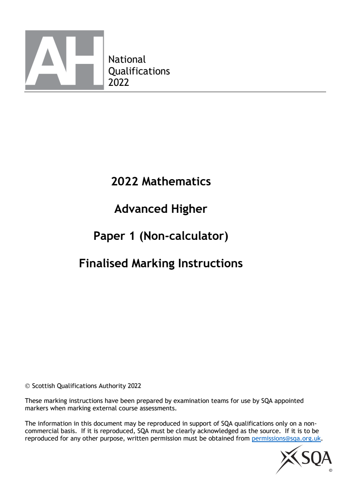
Selectable page text
National
Qualifications
2022
2022 Mathematics
Advanced Higher
Paper 1 (Non-calculator)
Finalised Marking Instructions
© Scottish Qualifications Authority 2022
These marking instructions have been prepared by examination teams for use by SQA appointed
markers when marking external course assessments.
The information in this document may be reproduced in support of SQA qualifications only on a non-
commercial basis. If it is reproduced, SQA must be clearly acknowledged as the source. If it is to be
reproduced for any other purpose, written permission must be obtained from permissions@sqa.org.uk.PDF page 2
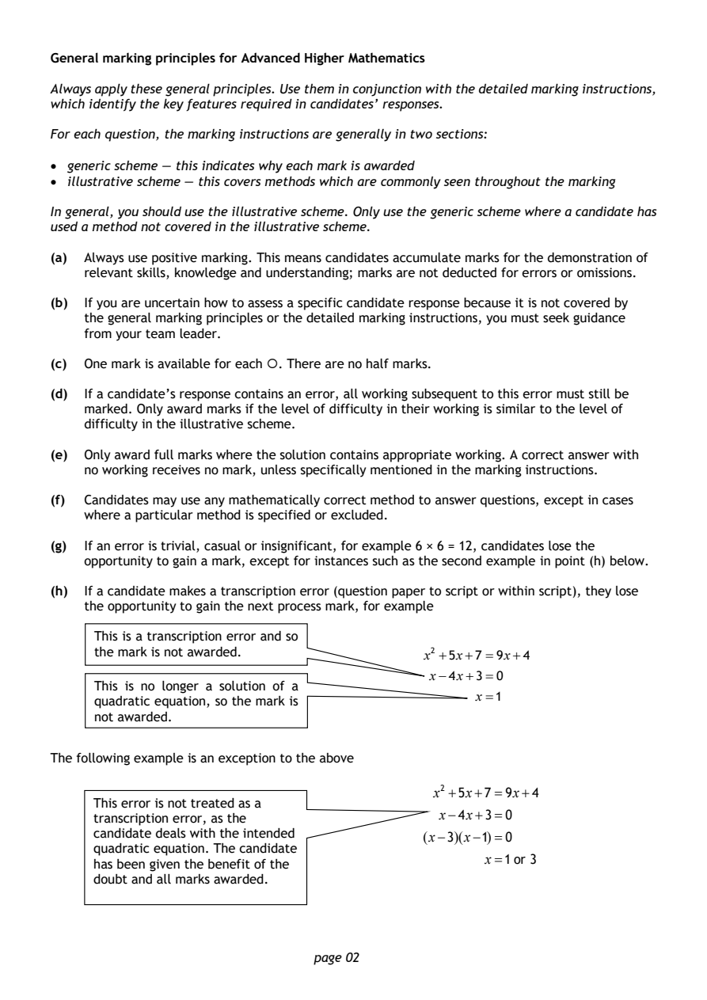
Selectable page text
General marking principles for Advanced Higher Mathematics
Always apply these general principles. Use them in conjunction with the detailed marking instructions,
which identify the key features required in candidates’ responses.
For each question, the marking instructions are generally in two sections:
• generic scheme — this indicates why each mark is awarded
• illustrative scheme — this covers methods which are commonly seen throughout the marking
In general, you should use the illustrative scheme. Only use the generic scheme where a candidate has
used a method not covered in the illustrative scheme.
(a) Always use positive marking. This means candidates accumulate marks for the demonstration of
relevant skills, knowledge and understanding; marks are not deducted for errors or omissions.
(b) If you are uncertain how to assess a specific candidate response because it is not covered by
the general marking principles or the detailed marking instructions, you must seek guidance
from your team leader.
(c) One mark is available for each . There are no half marks.
(d) If a candidate’s response contains an error, all working subsequent to this error must still be
marked. Only award marks if the level of difficulty in their working is similar to the level of
difficulty in the illustrative scheme.
(e) Only award full marks where the solution contains appropriate working. A correct answer with
no working receives no mark, unless specifically mentioned in the marking instructions.
(f) Candidates may use any mathematically correct method to answer questions, except in cases
where a particular method is specified or excluded.
(g) If an error is trivial, casual or insignificant, for example 6 × 6 = 12, candidates lose the
opportunity to gain a mark, except for instances such as the second example in point (h) below.
(h) If a candidate makes a transcription error (question paper to script or within script), they lose
the opportunity to gain the next process mark, for example
This is a transcription error and so
the mark is not awarded. x² +5x+7 =9x+4
x−4x+3=0
This is no longer a solution of a
x=1
quadratic equation, so the mark is
not awarded.
The following example is an exception to the above
x² +5x+7=9x+4
This error is not treated as a
transcription error, as the
x−4x+3=0
candidate deals with the intended (x−3)(x−1)=0
quadratic equation. The candidate
x=1 or 3
has been given the benefit of the
doubt and all marks awarded.
page 02PDF page 3
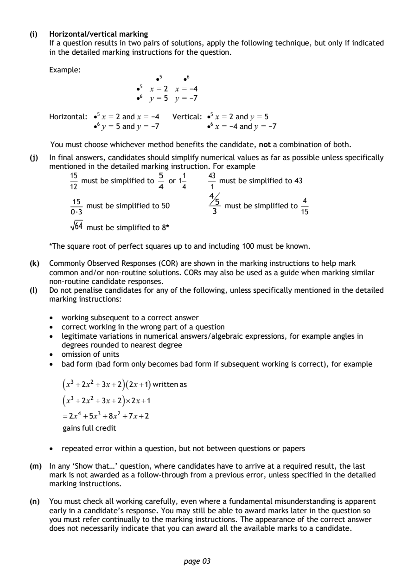
Selectable page text
(i) Horizontal/vertical marking
If a question results in two pairs of solutions, apply the following technique, but only if indicated
in the detailed marking instructions for the question.
Example:
•5 •6
•5 x = 2 x = −4
•6 y = 5 y = −7
Horizontal: •5 x = 2 and x = −4 Vertical: •⁵ x = 2 and y = 5
•6 y = 5 and y = −7 •6 x = −4 and y = −7
You must choose whichever method benefits the candidate, not a combination of both.
(j) In final answers, candidates should simplify numerical values as far as possible unless specifically
mentioned in the detailed marking instruction. For example
15 5 1 43
must be simplified to or 1 must be simplified to 43
12 4 4 1
4
15 5 4
must be simplified to 50 must be simplified to
0·3 3 15
64 must be simplified to 8*
*The square root of perfect squares up to and including 100 must be known.
(k) Commonly Observed Responses (COR) are shown in the marking instructions to help mark
common and/or non-routine solutions. CORs may also be used as a guide when marking similar
non-routine candidate responses.
(l) Do not penalise candidates for any of the following, unless specifically mentioned in the detailed
marking instructions:
• working subsequent to a correct answer
• correct working in the wrong part of a question
• legitimate variations in numerical answers/algebraic expressions, for example angles in
degrees rounded to nearest degree
• omission of units
• bad form (bad form only becomes bad form if subsequent working is correct), for example
(
x³ +2x² +3x+2
)(2x+1)
written as
( )
x³ +2x² +3x+2 ×2x+1
=2x⁴ +5x³ +8x² +7x+2
gains full credit
• repeated error within a question, but not between questions or papers
(m) In any ‘Show that…’ question, where candidates have to arrive at a required result, the last
mark is not awarded as a follow-through from a previous error, unless specified in the detailed
marking instructions.
(n) You must check all working carefully, even where a fundamental misunderstanding is apparent
early in a candidate’s response. You may still be able to award marks later in the question so
you must refer continually to the marking instructions. The appearance of the correct answer
does not necessarily indicate that you can award all the available marks to a candidate.
page 03PDF page 4
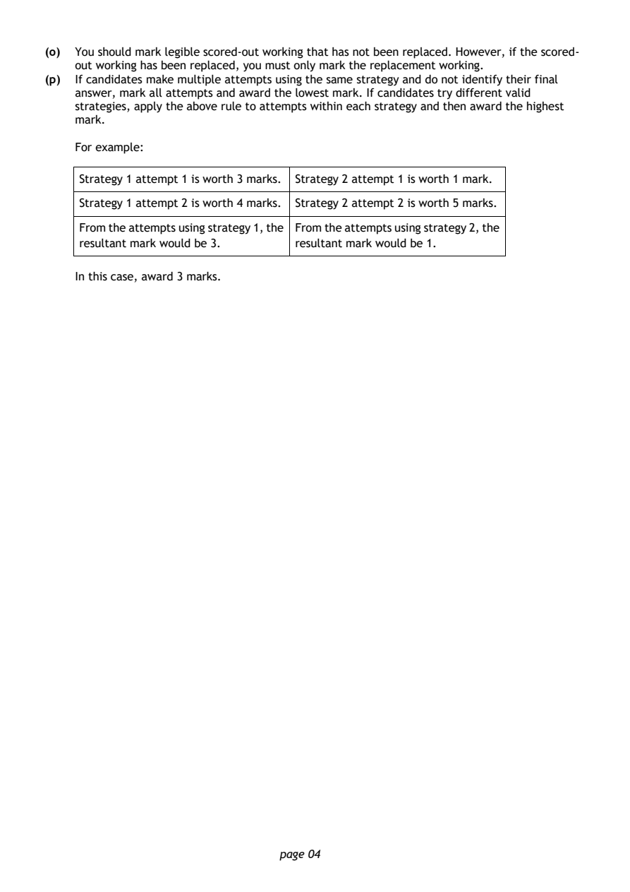
Selectable page text
(o) You should mark legible scored-out working that has not been replaced. However, if the scored-
out working has been replaced, you must only mark the replacement working.
(p) If candidates make multiple attempts using the same strategy and do not identify their final
answer, mark all attempts and award the lowest mark. If candidates try different valid
strategies, apply the above rule to attempts within each strategy and then award the highest
mark.
For example:
Strategy 1 attempt 1 is worth 3 marks. Strategy 2 attempt 1 is worth 1 mark.
Strategy 1 attempt 2 is worth 4 marks. Strategy 2 attempt 2 is worth 5 marks.
From the attempts using strategy 1, the From the attempts using strategy 2, the
resultant mark would be 3. resultant mark would be 1.
In this case, award 3 marks.
page 04PDF page 5
Paper 1, Question 1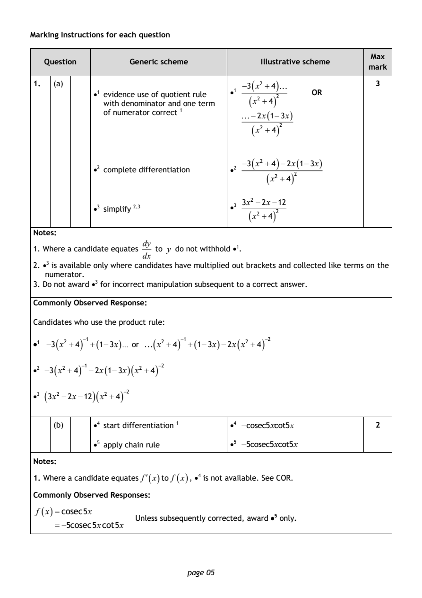
Selectable page text
Marking Instructions for each question
Max
Question Generic scheme Illustrative scheme
mark
1. (a) −3 ( x² +4 ) 3
•1 evidence use of quotient rule •1 OR
( )
with denominator and one term x² +4 ²
of numerator correct ¹ −2x(1−3x)
( )
x² +4 ²
−3 ( x² +4 ) −2x(1−3x)
•2 complete differentiation •2
( )
x² +4 ²
3x² −2x−12
•3 simplify ²^{,}³ •3
( )
x² +4 ²
Notes:
dy
1. Where a candidate equates to y do not withhold •¹.
dx
2. •³ is available only where candidates have multiplied out brackets and collected like terms on the
numerator.
3. Do not award •³ for incorrect manipulation subsequent to a correct answer.
Commonly Observed Response:
Candidates who use the product rule:
•1 −3 ( x² +4 ) ⁻¹+(1−3x)... or ( x² +4 ) ⁻¹+(1−3x)−2x ( x² +4 ) ⁻²
•2 −3 ( x² +4 ) ⁻¹−2x(1−3x)( x² +4 ) ⁻²
•3 ( 3x² −2x−12 )( x² +4 ) ⁻²
(b) •4 start differentiation ¹ •4 −cosec5xcot5x 2
•5 apply chain rule •5 −5cosec5xcot5x
Notes:
1. Where a candidate equates f′(x)to f (x), •⁴ is not available. See COR.
Commonly Observed Responses:
f (x)=cosec5x
Unless subsequently corrected, award •⁵ only.
=−5cosec5xcot5x
page 05PDF page 6
Paper 1, Question 2Paper 1, Question 3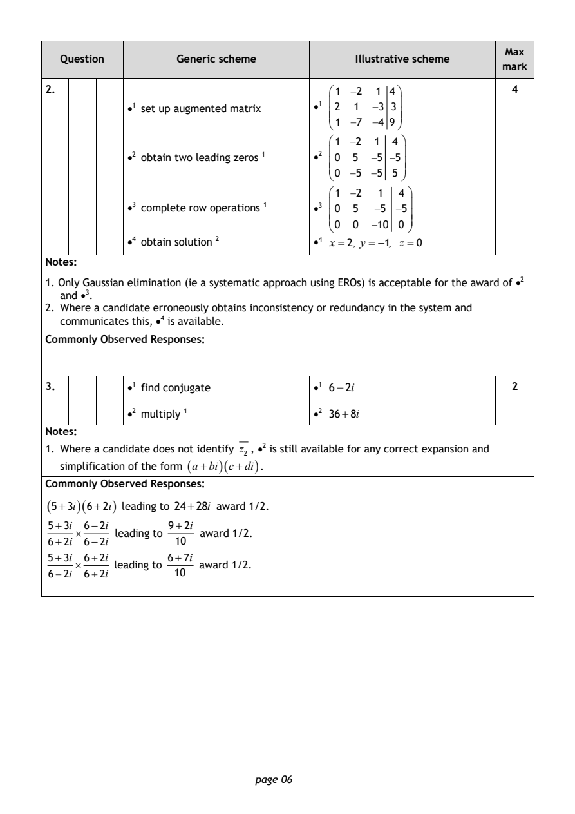
Selectable page text
Max
Question Generic scheme Illustrative scheme
mark
2. 1 −2 1 4 4
•1 set up augmented matrix •1 2 1 −3 3
1 −7 −4 9
1 −2 1 4
•2 obtain two leading zeros ¹ •2 0 5 −5 −5
0 −5 −5 5
1 −2 1 4
•3 complete row operations ¹ •3 0 5 −5 −5
0 0 −10 0
•4 obtain solution ² •4 x =2, y =−1, z =0
Notes:
1. Only Gaussian elimination (ie a systematic approach using EROs) is acceptable for the award of •²
and •³.
2. Where a candidate erroneously obtains inconsistency or redundancy in the system and
communicates this, •⁴ is available.
Commonly Observed Responses:
3. •1 find conjugate •1 6−2i 2
•2 multiply ¹ •2 36+8i
Notes:
1. Where a candidate does not identify z₂ , •2 is still available for any correct expansion and
simplification of the form (a+bi)(c+di).
Commonly Observed Responses:
(5+3i)(6+2i) leading to 24+28i award 1/2.
5+3i 6−2i 9+2i
× leading to award 1/2.
6+2i 6−2i 10
5+3i 6+2i 6+7i
× leading to award 1/2.
6−2i 6+2i 10
page 06PDF page 7
Paper 1, Question 4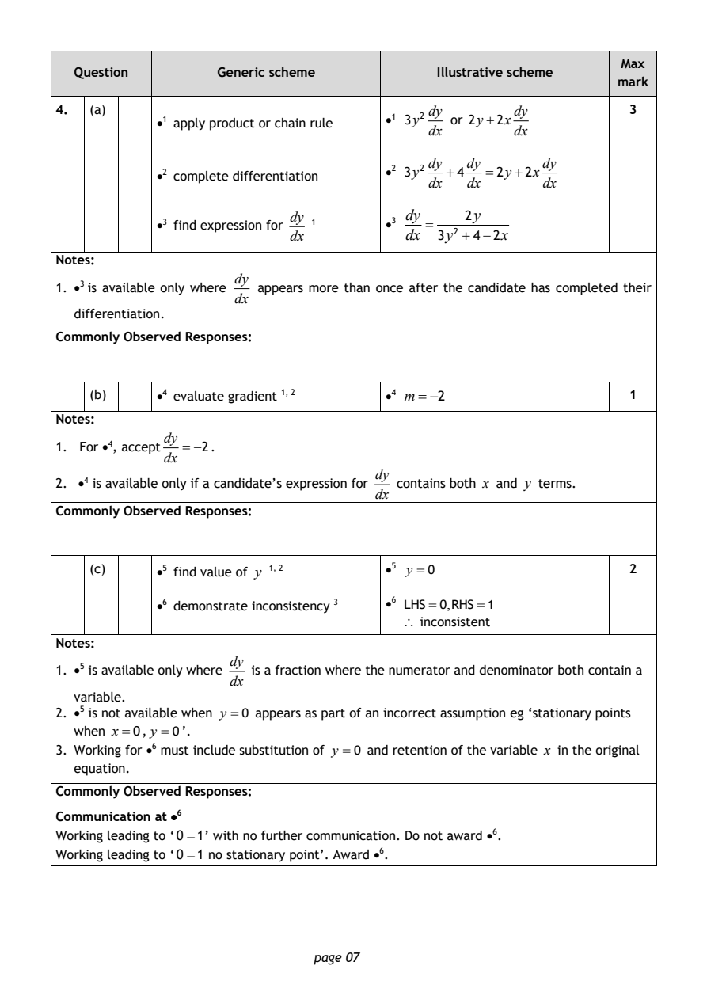
Selectable page text
Max
Question Generic scheme Illustrative scheme
mark
4. (a) dy dy 3
•1 apply product or chain rule •1 3y² or 2y+2x
dx dx
dy dy dy
•2 complete differentiation •2 3y² +4 =2y+2x
dx dx dx
dy ₁ dy 2y
•3 find expression for •3 =
dx dx 3y² +4−2x
Notes:
dy
1. •³ is available only where appears more than once after the candidate has completed their
dx
differentiation.
Commonly Observed Responses:
(b) •4 evaluate gradient ¹^{,} ² •4 m=−2 1
Notes:
dy
1. For •⁴, accept =−2.
dx
dy
2. •4 is available only if a candidate’s expression for contains both x and y terms.
dx
Commonly Observed Responses:
(c) •5 find value of y ¹^{,} ² •5 y =0 2
•6 demonstrate inconsistency ³ •6 LHS=0,RHS=1
∴ inconsistent
Notes:
dy
1. •⁵ is available only where is a fraction where the numerator and denominator both contain a
dx
variable.
2. •⁵ is not available when y =0 appears as part of an incorrect assumption eg ‘stationary points
when x=0, y =0’.
3. Working for •⁶ must include substitution of y =0 and retention of the variable x in the original
equation.
Commonly Observed Responses:
Communication at •⁶
Working leading to ‘0=1’ with no further communication. Do not award •⁶.
Working leading to ‘0=1 no stationary point’. Award •⁶.
page 07PDF page 8
Paper 1, Question 5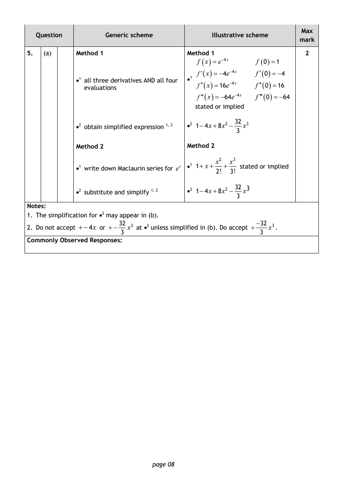
Selectable page text
Max
Question Generic scheme Illustrative scheme
mark
5. (a) Method 1 Method 1 2
f (x)=e⁻⁴^{x} f (0)=1
f′(x)=−4e⁻⁴^{x} f′(0)=−4
•1 all three derivatives AND all four •1
f′′(x)=16e⁻⁴^{x} f′′(0)=16
evaluations
f′′′(x)=−64e⁻⁴^{x} f′′′(0)=−64
stated or implied
32
•2 obtain simplified expression ¹^{,} ² •2 1−4x+8x² − x³
3
Method 2 Method 2
x² x³
•1 write down Maclaurin series for e^{x} •1 1+ x+ + stated or implied
2! 3!
32 3
•2 substitute and simplify ¹^{,} ² •2 1−4x+8x² − x
3
Notes:
1. The simplification for •² may appear in (b).
32 −32
2. Do not accept +−4x or +− x³ at •² unless simplified in (b). Do accept + x³.
3 3
Commonly Observed Responses:
page 08PDF page 9
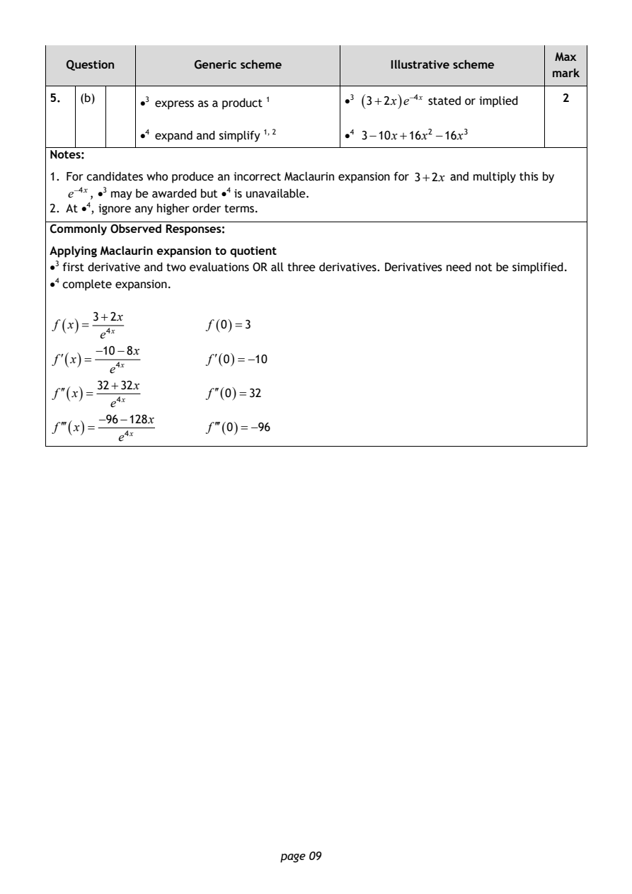
Selectable page text
Max
Question Generic scheme Illustrative scheme
mark
5. (b) •3 express as a product ¹ •3 (3+2x)e⁻⁴^{x} stated or implied 2
•4 expand and simplify ¹^{,} ² •4 3−10x+16x² −16x³
Notes:
1. For candidates who produce an incorrect Maclaurin expansion for 3+2x and multiply this by
e⁻⁴^{x}, •3 may be awarded but •⁴ is unavailable.
2. At •⁴, ignore any higher order terms.
Commonly Observed Responses:
Applying Maclaurin expansion to quotient
•3 first derivative and two evaluations OR all three derivatives. Derivatives need not be simplified.
•4 complete expansion.
3+2x
f (x)= f (0)=3
e⁴^{x}
−10−8x
f′(x)= f′(0)=−10
e⁴^{x}
32+32x
f′′(x)= f′′(0)=32
e⁴^{x}
−96−128x
f′′′(x)= f′′′(0)=−96
e⁴^{x}
page 09PDF page 10
Paper 1, Question 6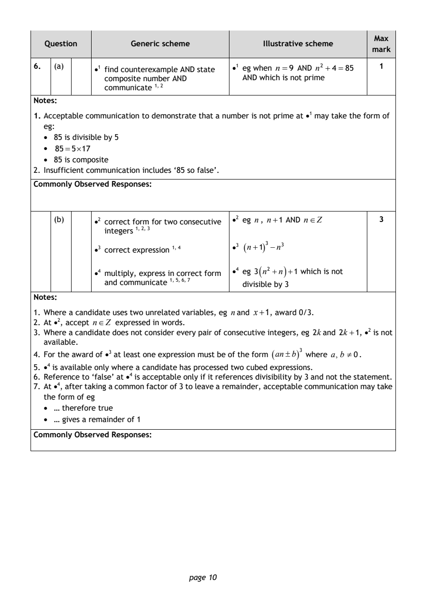
Selectable page text
Max
Question Generic scheme Illustrative scheme
mark
6. (a) •1 find counterexample AND state •1 eg when n=9 AND n² +4 =85 1
composite number AND AND which is not prime
communicate ¹^{,} ²
Notes:
1. Acceptable communication to demonstrate that a number is not prime at •¹ may take the form of
eg:
• 85 is divisible by 5
• 85=5×17
• 85 is composite
2. Insufficient communication includes ‘85 so false’.
Commonly Observed Responses:
(b) •2 correct form_{,}₃ for two consecutive •2 eg n, n+1 AND n∈Z 3
integers ¹^{,} ²
•3 correct expression ¹^{,} ⁴ •3 (n+1)³ −n³
•4 multiply, express in co₆_{,}r₇rect form •4 eg 3 ( n² +n ) +1 which is not
and communicate ¹^{,} ⁵^{,} divisible by 3
Notes:
1. Where a candidate uses two unrelated variables, eg nand x+1, award 0/3.
2. At •², accept n∈Z expressed in words.
3. Where a candidate does not consider every pair of consecutive integers, eg 2kand 2k +1, •² is not
available.
4. For the award of •³ at least one expression must be of the form (an±b)³ where a, b ≠0.
5. •⁴ is available only where a candidate has processed two cubed expressions.
6. Reference to ‘false’ at •⁴ is acceptable only if it references divisibility by 3 and not the statement.
7. At •⁴, after taking a common factor of 3 to leave a remainder, acceptable communication may take
the form of eg
• … therefore true
• … gives a remainder of 1
Commonly Observed Responses:
page 10PDF page 11
Paper 1, Question 7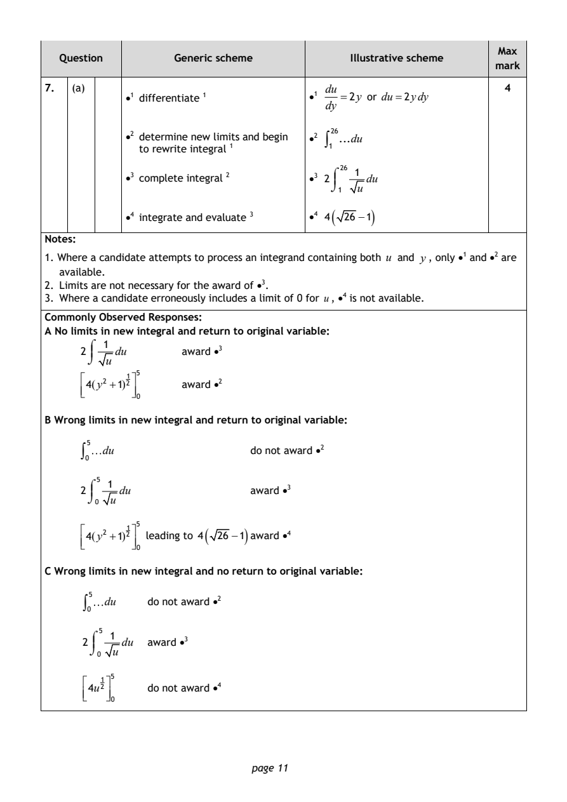
Selectable page text
Max
Question Generic scheme Illustrative scheme
mark
7. (a) du 4
•1 differentiate ¹ •1 =2y or du=2ydy
dy
•2 determine new limits and begin •2 ∫ 26 ...du
to rewrite integral ¹ 1
26
⌠ 1
•3 complete integral ² •3 2 du
⌡ u
1
( )
•4 integrate and evaluate ³ •4 4 26 −1
Notes:
1. Where a candidate attempts to process an integrand containing both u and y, only •¹ and •² are
available.
2. Limits are not necessary for the award of •³.
3. Where a candidate erroneously includes a limit of 0 for u, •⁴ is not available.
Commonly Observed Responses:
A No limits in new integral and return to original variable:
⌠ 1
2 du award •³
⌡ u
5
4(y² +1)²¹ award •²
0
B Wrong limits in new integral and return to original variable:
5
∫ du do not award •²
0
5
⌠ 1
2 du award •³
⌡ u
0
5
( )
4(y² +1)²¹ leading to 4 26 −1 award •⁴
0
C Wrong limits in new integral and no return to original variable:
5
∫ du do not award •²
0
5
⌠ 1
2 du award •³
⌡ u
0
4u²¹ ⁵ do not award •⁴
0
page 11PDF page 12
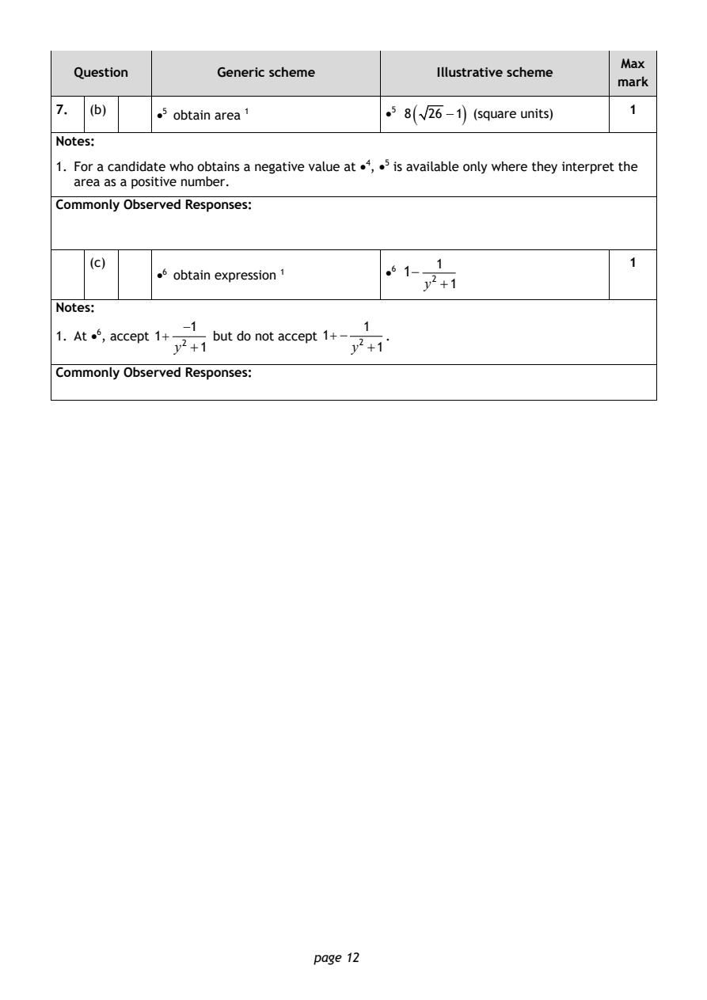
Selectable page text
Max
Question Generic scheme Illustrative scheme
mark
7. (b) •5 obtain area ¹ •5 8 ( 26 −1 ) (square units) 1
Notes:
1. For a candidate who obtains a negative value at •⁴, •5 is available only where they interpret the
area as a positive number.
Commonly Observed Responses:
(c) 1 1
•6 obtain expression ¹ •6 1−
y² +1
Notes:
−1 1
1. At •⁶, accept 1+ but do not accept 1+− .
y² +1 y² +1
Commonly Observed Responses:
page 12PDF page 13
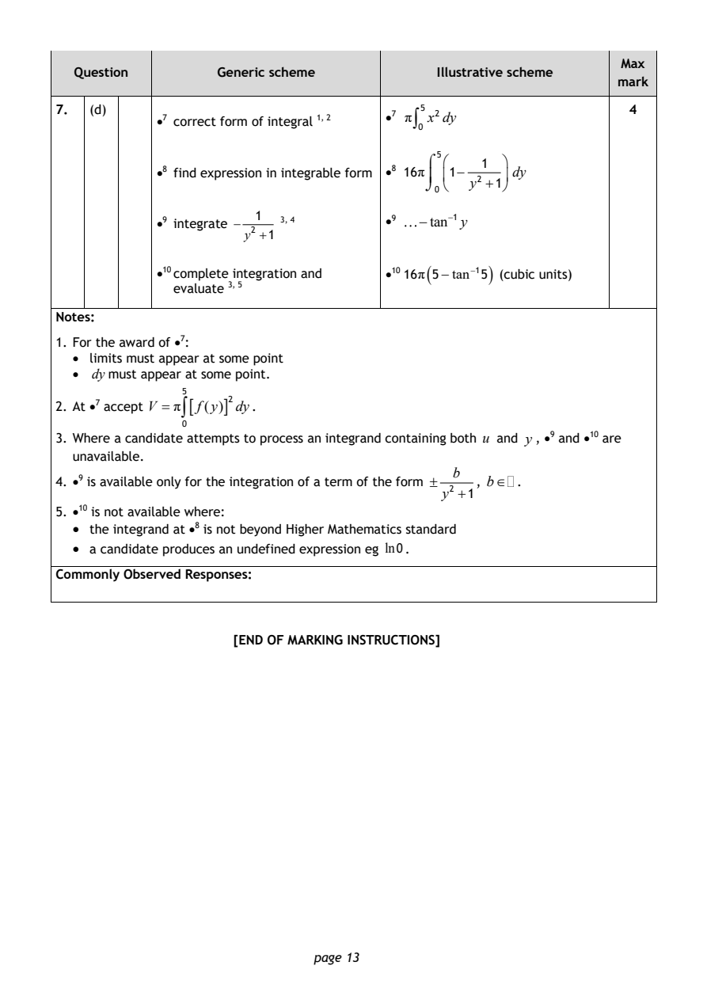
Selectable page text
Max
Question Generic scheme Illustrative scheme
mark
7. (d) 4
•7 correct form of integral ¹^{,} ²
•7 π∫₀⁵x²dy
5
⌠ 1
•8 find expression in integrable form •⁸ 16π 1− dy
⌡
0
y² +1
1 ₃
•9 integrate − , 4 •9 −tan⁻¹y
y² +1
•10 complete in₅tegration and •10 16π ( 5−tan⁻¹5 ) (cubic units)
evaluate ³^{,}
Notes:
1. For the award of •⁷:
• limits must appear at some point
• dymust appear at some point.
2. At •⁷ accept V =π∫⁵[f(y)]²dy.
0
3. Where a candidate attempts to process an integrand containing both u and y, •⁹ and •¹⁰ are
unavailable.
b
4. •⁹ is available only for the integration of a term of the form ± , b∈ .
y² +1
5. •¹⁰ is not available where:
• the integrand at •⁸ is not beyond Higher Mathematics standard
• a candidate produces an undefined expression eg ln0.
Commonly Observed Responses:
[END OF MARKING INSTRUCTIONS]
page 13